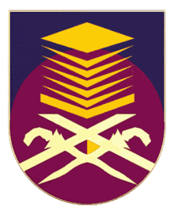

Bachelor of Business Administrative (Hons) in Business Economics (October 2020 — July 2023)
Universiti Teknologi MARA (UiTM) Kelantan Branch, Kota Bharu Campus
Financial Accounting and Reporting Standard, Statistics, English Language, Mandarin Language,
Advance Fasilitator Skills, Basic Web Design (include microsoft) and Business Law.

STPM in Economics (March 2018 — November 2019)
SAM Sultan Hisamuddin, Kg. Jawa
- Subject taken: General Studies, Business Studies, Malay Languages and Islamic Studies
Non-science stream (Business) (2013 — 2017)
SAM Sultan Hisamuddin, Sg.Bertih
- Sijil Pelajaran Malaysia (S.P.M): A1 for Bahasa Melayu, Ekonomi and Pengajian Perniagaan